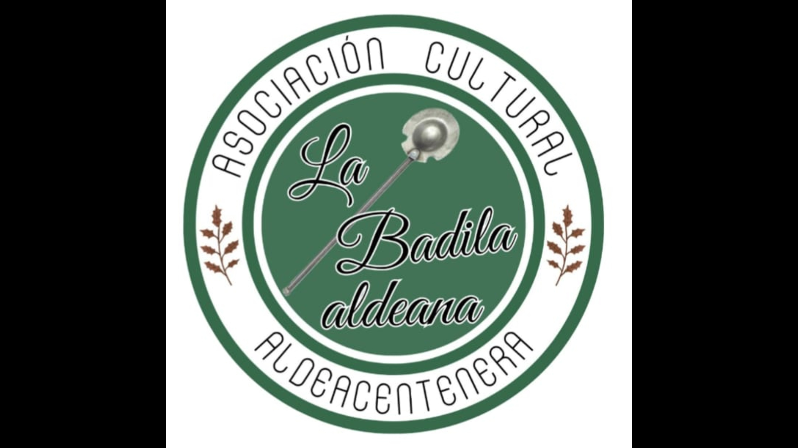

Asociación Cultural de Aldeacentenera
Un espacio para compartir nuestra cultura, nuestras tradiciones y todo lo que hacemos en Aldeacentenera.
La Asociación cultural La Badila Aldeana, nace con el único objetivo de dar cabida a todas cuantas ideas y proyectos surjan de cualquier persona, grupo o institución de esta localidad. Todo el ciudadano que lo desee puede ser miembro; no se paga cuota alguna por ser de la asociación, lo único exigible es ser ciudadano de este municipio. Los interesados en nuestros proyectos pueden participar, aún no siendo socios, en calidad de colaboradores.
Organizamos actividades culturales, teatro, encuentros y eventos para disfrutar juntos y mantener vivas nuestras raíces.
Representaciones teatrales y actividades relacionadas con el mundo del teatro.
Participamos y organizamos actividades culturales y acontecimientos de nuestro pueblo.
Encuentros y actividades para reunir a vecinos y amigos.
El teatro es una de las grandes pasiones de La Badila. Aquí iremos colocando nuestras obras, fotografías, actuaciones y próximos proyectos.
Puedes encontrar nuestros vídeos y actividades también en nuestro canal de YouTube.
▶ Visitar nuestro canal